After completing this lesson, you’ll be able to:
As we know, a workspace contains a reader to read a dataset, and each feature type in that dataset is shown in the workspace canvas:
To control how the reader operates requires the use of reader parameters.
You can find reader parameters by clicking Parameters in the Generate Workspace or Add Reader dialogs:
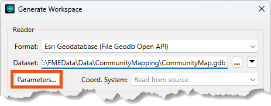
They can also be found in the Navigator window in Workbench:

Because parameters refer to specific components and characteristics of the related format, readers of different formats have different control parameters.
Double-click on any parameters to edit a parameter in the Navigator window. Doing so opens up a dialog where the parameter’s value may be set:

Reader parameters control all feature types in the dataset. Think of it like brewing a pot of coffee. The strength control on the coffee machine affects all the cups poured.
Because some reader parameters affect how feature types are generated, they can only be set when you add the reader. If you set them incorrectly or want to change them, you have to delete the reader and add it again.
An example is the Group Entities By attribute for the Autodesk AutoCAD DWG/DXF format. This attribute impacts how feature types are formed and can only be set when you add the reader.
This behavior does not exist in writer parameters.
Like readers, we know a workspace contains a writer to write a dataset, and each feature type to be written is shown in the workspace canvas:

To control how that writer operates requires the use of writer parameters.
Writer parameters can be located and set by clicking Parameters when a new workspace is being generated:

They can also be found in the Navigator window in Workbench:
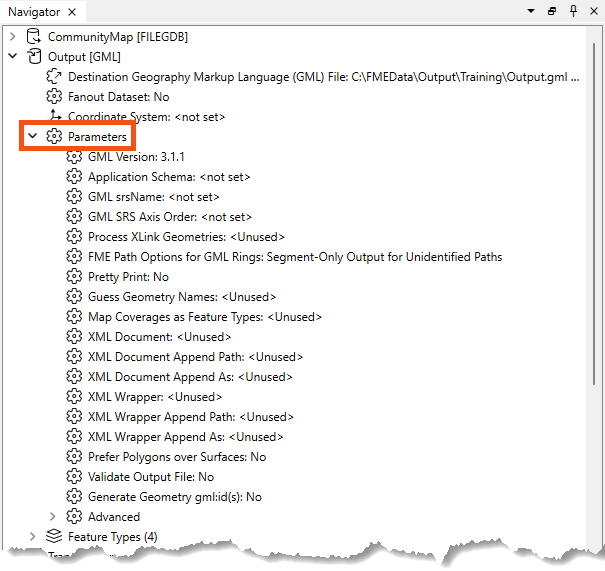
Finally, there is a button that appears when you select feature types that can take you directly to the reader/writer parameters:
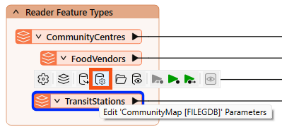
Because parameters refer to specific components and characteristics of the related format, writers of different formats have different control parameters.
Double-click on any parameters to edit a parameter in the Navigator window. Doing so opens up a dialog where the parameter’s value may be set:
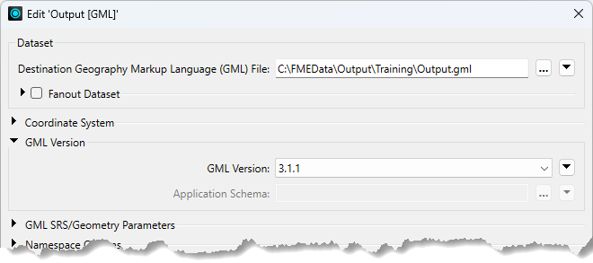
Like readers, writer parameters control all feature types in the dataset. In the above screenshot, all feature types are version 3.1.1.
However, each reader and writer feature type has settings, just as each cup of coffee can be adjusted with cream and sugar. You can learn more in the documentation.
Feature types also have parameters controlling how FME reads or writes a table, layer, or other data group.
You can view and edit these parameters by double-clicking a feature type to open the Feature Type dialog:
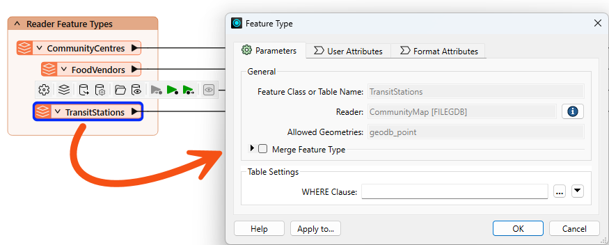
You can also find them in the Navigator under the reader or writer > Feature Types > feature type name > Parameters:
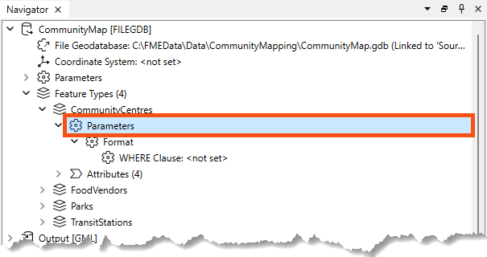
Like reader and writer parameters, the options available here vary by format.
For example, with the Esri File Geodatabase Open API reader, reader feature types have a single parameter: a WHERE Clause that can be used to restrict data on reading:

Some formats do not have any parameters, such as GML writer feature types:

It's worth exploring the options available to you based on the format. There are some very powerful feature type parameters. For example:
One important consideration in overall workspace design is cross-OS compatibility. Generally, FME is designed so your workspaces will run on any of our supported operating systems. However, there are a few best practices to keep in mind that could save you from problems in the future. These include:
\/:*?"<>|, null, and / in your file and folder names. For more advice, see this thread.myObject and myobject, while others reject these fields as duplicate violations. Assuming case insensitivity is the safest method.
⭐New in FME 2025.0: FME now offers enhanced control for managing table and column name formatting across all database formats. Users can choose to convert names to uppercase, lowercase, or keep the original case while ensuring compatibility across different database systems. Check out your database writers' Case Conversion writer parameters.
Frank continues to work on his workspace, which reads community map data from an Esri geodatabase and writes it to GML and SQLite (parks only). However, the workspace needs several improvements:
These can be accomplished using reader/writer/feature type parameters. Let's get to work!
Try accomplishing the three tasks above without reading the instructions for an added challenge. Although you could solve them using transformers, try only to use reader/writer/feature type parameters. It's possible!
Frank opens the starting workspace in FME Workbench (FME 2025.0.1 or later).

He runs the workspace.
He inspects the CommunityCentres reader feature type cache. He notes that it has ten community centers, including the one we need to remove from the written data, Mount Pleasant.
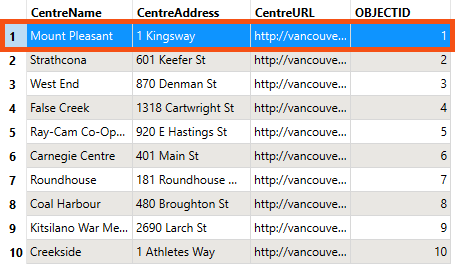
Frank wants to use a reader feature type parameter to remove the Mount Pleasant community center from the written data.
He double-clicks the CommunityCentre reader feature type to open its parameters, then enters the following partial SQL statement for the WHERE Clause:
"CentreName" <> 'Mount Pleasant'

He clicks OK.
He runs the workspace.
He inspects the CommunityCentre reader feature type cache again. He confirms that FME did not read (or, therefore, write) the Mount Pleasant feature:
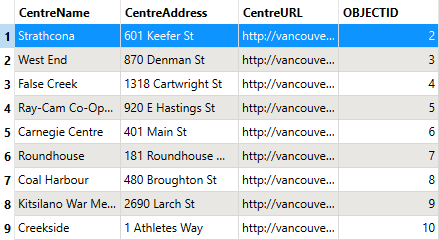
Use this parameter "where" you can to avoid reading too much data! 😉
We cover more tips like this in our Optimize Workspace Performance course.
Next, Frank wants to fix the pretty print issue.
First, he views the data without pretty print. He clicks one of the GML writer feature types and uses the Open Containing Folder button to find the destination GML file:
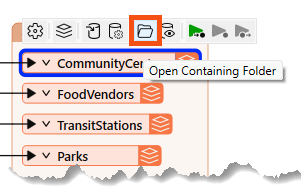
He opens it in Notepad. He notes that the text does not use indentation to indicate nesting:
...<gml:boundedBy><gml:Envelope srsName="EPSG:26910" srsDimension="3"><gml:lowerCorner>486494.0932 5456045.6164 0</gml:lowerCorner><gml:upperCorner>494255.29509999976 5460601.212200001 0</gml:upperCorner></gml:Envelope></gml:boundedBy><gml:featureMember><fme:TransitStations gml:id="id0b91e990-57bb-4e58-8861-515334e2b534"><fme:StationName>Waterfront</fme:StationName><fme:OBJECTID>1</fme:OBJECTID><gml:pointProperty><gml:Point srsName="EPSG:26910" srsDimension="2"><gml:pos>491874.0992999999 5459264.233100001</gml:pos></gml:Point></gml:pointProperty></fme:TransitStations></gml:featureMember>...
He finds the Output [GML] writer in the Navigator. He expands it to find its Parameters section, and expands that to find the Pretty Print parameter:

He double-clicks it to open the parameters dialog. He finds Pretty Print again and sets it to Yes:
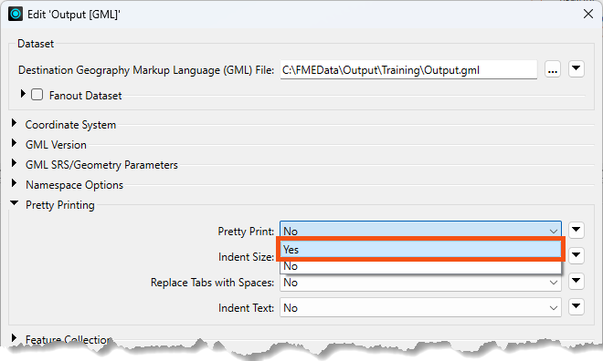
Now, the written data will be pretty printed with indents.
He runs the workspace.
He inspects the written GML file using Notepad to see the difference:
...<gml:boundedBy> <gml:Envelope srsName="EPSG:26910" srsDimension="2"> <gml:lowerCorner>491133.7028000001 5456674.0671999995</gml:lowerCorner> <gml:upperCorner>494255.29509999976 5459264.233100001</gml:upperCorner> </gml:Envelope></gml:boundedBy><gml:featureMember> <fme:TransitStations gml:id="id5519c06b-d3d0-4b4c-92de-67caec9f13f1"> <fme:StationName>Waterfront</fme:StationName> <fme:OBJECTID>1</fme:OBJECTID> <gml:pointProperty> <gml:Point srsName="EPSG:26910" srsDimension="2"> <gml:pos>491874.0992999999 5459264.233100001</gml:pos> </gml:Point> </gml:pointProperty> </fme:TransitStations></gml:featureMember>...
The City has passed a law stating that indigenous language place names must be used alongside English names.
This is an imaginary scenario, but such initiatives do exist.
Doing so requires finding and editing features in the Parks SQLite database. To ensure the workspace edits features rather than creating new ones, he will use an important writer feature type parameter: fme_db_operation. Frank hasn't used this parameter before, so he'll do some testing to understand how it works.
The starting workspace already has an SQLite writer and feature type. When he ran it earlier, he created the database.
He inspects the current state of the data by clicking the SQLite Parks writer feature type and clicking the View Written Data button:

The database stores data about the parks:
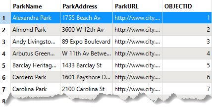
Currently, a writer parameter, Overwrite Existing Database, is enabled. Therefore, FME creates the database from scratch each time it runs the workspace, ensuring it has the same number of records as the source data, no matter how many times it runs.
To see how fme_db_operation works, Frank disables that writer parameter. He finds it in the Navigator and changes it to disabled (unchecked):

Now, if he were to run the workspace (he won't!), he would append 69 records to the database. That's because the default database operation for FME writers is Insert. He confirms this by examining the Parks SQLite writer feature type. He double-clicks it and observes that General > Feature Operation is set to Insert and Table Handling is set to Create If Needed:

Suppose you accidentally mess up the starting database while doing this exercise. In that case, you can always enable Overwrite Existing Database, Insert, and Create If Needed, and rerun the workspace to return to the starting state.
Frank can use this writer feature type parameter to update the names in the database.
He changes Feature Operation to fme_db_operation:
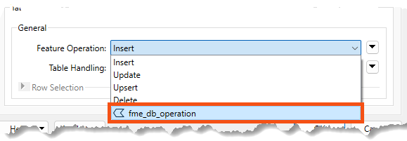
Now he can use this attribute to specify the database operation per feature. Otherwise, the operation would be defined for the entire feature type.
When he makes this change, FME requires him to specify how features will be identified via the Row Selection > Match Columns parameter. He chooses OBJECTID, as FME already generated this unique ID when it wrote the data originally:

Now, the writer feature type will Insert/Update/Upsert/etc, based on the value of the fme_db_operation and OBJECTID attribute on incoming features.
Frank is ready to configure the workspace to change a park name using an Update feature operation.
He adds a Tester connected to the Parks reader feature type:
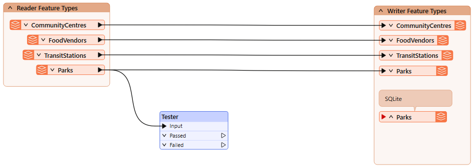
He ensures it's not connected to the writer feature type yet! We don't want to write a feature to the database before we are ready.
If you are nervous about this, you can right-click the writer feature type and Disable it until you are ready to write. Just make sure to Enable it before writing!
He'll update a single park name as a test for now, so he configures the Tester to pass features where ParkName = Stanley Park:

He runs his workspace. He now has a single feature with ParkName = Stanley Park exiting the Tester's Passed port:

He adds an AttributeCreator after the Tester:
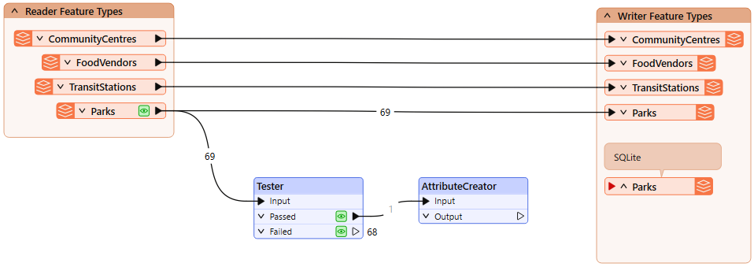
He configures it like this:
| Output Attribute | Value |
| fme_db_operation | UPDATE |
| ParkName | Spapəy̓əq (Stanley Park) |
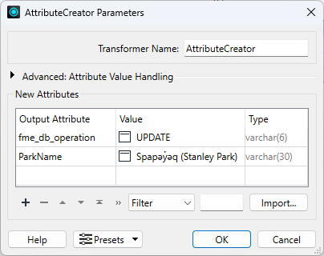
Spapəy̓əq roughly translates to "bent at the end" in Hunquminum, the language spoken by the Musqueam First Nation. It refers to a specific part of the area now known as Stanley Park, Brockton Point. The phonetic pronunciation is "spah-pee-ahk."
Learn more from the City of Vancouver or the Vancouver Heritage Foundation.
He clicks OK.
He connects the AttributeCreator to the Parks SQLite writer feature type:

Frank runs the workspace and inspects the written data. He sees there are still only 69 features, but the feature with OBJECTID = 55 now has the ParkName = Spapəy̓əq (Stanley Park), successfully updated in-place using a writer feature parameter:

Using this method, he can control the database operation performed at the feature level. That's the power of parameters!
We could get the same output data using the parameters we started with: Insert, Create as Needed, and Overwrite Existing Database. However, that only works if you want to write the entire table each time. If you want to update specific records each time the workspace runs, for example, loading new or changed records every 10 minutes, you would have to use the fme_db_operation parameter.